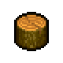

Wood billet
| wood billet | |
|---|---|
 | |
General Information
| |
Type :
|
Wood |
Stack size:
|
30 |
Base Cost :
|
|
Source(s)
| |
Buy from :
|
Tress (T I) |
Sell to :
|
Tress (T I) |
| Sawhorse, Circular saw | |
Study Information
| |
Study reward:
|
|
Technical Information
| |
Internal name:
|
wood1 |

Wood billets are a basic resource, made from processing logs at the sawhorse or circular saw. Alternatively, they can be purchased from Tress the wood merchant. They're used in the construction of a few basic workstations, as well as an intermediate step in crafting wood wedges and firewood.
Recipe
| Sawhorse | |
|---|---|
| Item Produced | Materials Required |
| 4× Wood billet |
1× |
| Circular saw | |
| Item Produced | Materials Required |
| 5× Wood billet |
1× |
Study
| Study table | |||
|---|---|---|---|
| Tech Points | Resources Required | Energy | Notes |
| 1× Faith 1× Science |
- |
Not decomposable | |
Building
| Workyard | |
|---|---|
| Item Produced | Materials Required |
| Chopping spot |
5× Wood billet |
| Wooden anvil |
2× Wood billet 2× Simple iron parts |
| Crematorium | |
| Item Produced | Materials Required |
| Place for burning corpses |
8× Wood billet |
Crafting
| Chopping spot | |
|---|---|
| Item Produced | Materials Required |
| 10× Firewood |
1× Wood billet |
| 10× Wood wedge |
1× Wood billet |
| ||||||||